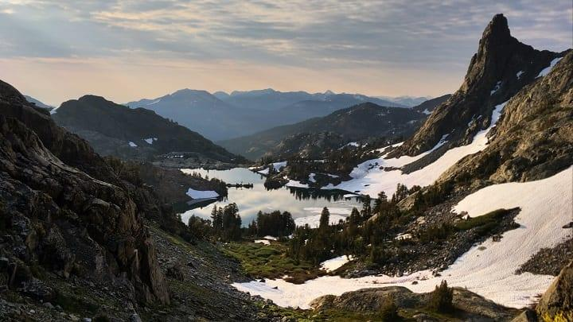

Sierra High Route Reflections
It’s been a while since I’ve sat down to write. The past two months have been a mixture of planes, trains, and mountains, with little time to sit and take a deep breath. I spent almost one of every two days in August and September in the backcountry, which was awesome but taxing.
From August 8th to 22nd, I hiked the Sierra High Route (SHR) with my good friend Sprout. A special thank you is in order to Josh, a trail angel from Fresno who made our hike possible. He not only drove us two hours down winding forest roads to the trailhead, but also let us crash at his house the night before. The hiking community is awesome.
The details of our SHR thru-hike were fairly straightforward—it was absolutely gorgeous, challenging in a good way, and probably my favorite hike to date. The hike is too far in the past to write a proper trip report, but I still want to share a couple of takeaways.
Handling Stress
I cannot overemphasize how much this hike challenged me—it was probably most difficult thing I’ve ever done and really pushed my comfort zone. I grew a lot, but the SHR reminded me of how much growth I still have to go through, particularly with handling stress and uncomfortable situations. Case in point, on Day 7 I wrote the following:
From [Gabbot Pass], Sprout and I scrambled down loose talus about 200 ft until the snow leveled out and we could walk in the suncups without risk of fall. The sun came out and quickly it got hot. About halfway down the pass, there was a little episode where a route down a talus outcropping resulted in a Class 4ish down climb. Sprout, with her climbing experience, managed to do it, but I didn’t feel comfortable and eventually backed out and ended up taking another route, which in retrospect was even more dangerous. I was shaken.
Under stress, I can make bad decisions and communicate poorly. Reflecting on that incident later, Sprout and I joked about “Little Baby Michael”—a Mr. Hyde-esque alter ego that comes out in stressful situations. “Little Baby Michael” is bad—not because he lacks the skill to do a difficult downclimb—but because he fails to stay calm and clear headed under pressure. Sprout was awesome at helping me through difficult sections of the SHR, and for that I am grateful. Plus, by the end of the hike I had developed an increased awareness of how I manage stress and began to handle these situations with an improved focused and confidence.
Wilderness
My final takeaway from the SHR was how beautiful and special Wilderness with a capital “W” is. While the Sierras are not Alaska or even Idaho in terms of remoteness, the SHR did give the feeling that we were out there. Where else in the contiguous United States can you walk for 120 miles without crossing a road or seeing a single sign of human civilization?
Unlike the social experiences that are the AT, PCT, and to a slightly lesser degree the TA, days went by on the SHR where we saw no more than one other person. For eight days from Road’s End to Red’s Meadow, Sprout and I were on our own. The lack of trail magnified our sense of solitude—the sensation of total freedom. The feeling of total isolation in the face of nature’s grandeur was so intense, and it’s one of the things that has stuck with me from the trip. I can’t wait for more.